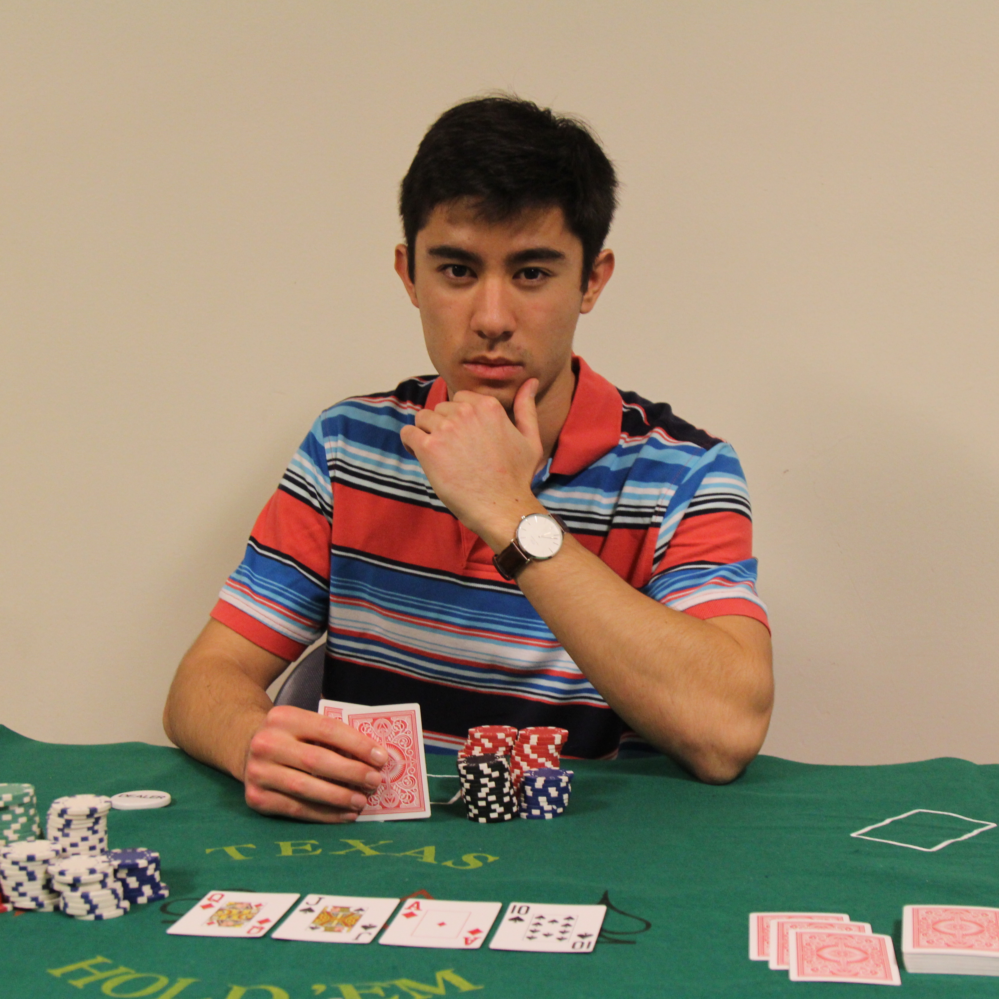

We get it.
Being a college student means textbooks cost more than your outfit, your de facto diet is ramen noodles, and you are constantly hunting for free swag giveaways.That’s where we — players who have sacked the casinos from Reno to Santa Barbara, and made a killing playing poker against people online from all over the world — come in.
Poker at Berkeley invites all members of the community, of any skill level, to learn a game that is quick to pick-up yet monumental to master; a game of skill and luck, of deception and mathematics. Above all, poker is some awesome fun, and we believe that anyone can benefit from learning to play.
Poker at Berkeley ultimately strives to educate, enable, and engage Berkeley with the various games of poker, with an emphasis on Texas Hold’em. We will analyze the game from an empirical and theoretical perspective, and explore its many different applications — probability, combinatorics, statistics, psychoanalysis, player-types, professional poker, and the game’s relations to theory, computer science, financial markets, and more.
By the end, you should be ready to pay off those student loans in no-time.

Learn
Attend master-classes and strategy sessions.

Play
Participate in games and tournaments to hone your skills.

Dominate
Become a poker legend
Officers

Jameson Mah
Co-president
Jameson is a freshman majoring in EECS from Ventura, California. His poker roots hail from his high school grad night, where he learned the entire game the night before a school-sponsored charity tournament (he lost in the first 10 minutes). Despite this, he continued studying poker, finding there was always room for improvement and reflection. He began forging his poker name at the humble Chumash Casino, located on Indian Reserve territory in the back mountains of Santa Barbara — that is, before they raised the minimum-age to 21. Jameson’s other interests include stock and options trading, flying UAV’s, triathlons, golf, rowing, piano, and painting. Contact Jameson at: jamesonmah@berkeley.edu
Ishaan Agrawal
Co-president
Ishaan is a freshman majoring in business from San Jose, California. He first learned poker during a high school poker tournament, and has continued to study and analyze his play since then. He mainly plays online or in small tournaments with friends, and has profited over $1,500 during his first few months at Berkeley. His other interests include stock trading, rubik’s cubes, leather working, and golf. Contact Ishaan at: ishaan.agrawal@berkeley.edu


Sahil Hansalia
Vice President
Sahil is a freshman studying Bioengineering from Milpitas, California. He started playing poker on a random poker app (could have been WSOP) and has since moved on to bigger and better things. He continues to improve his poker skills and hopes to help you do the same. Sahil’s other interests include soccer, investing, chess, and watching movies. Contact Sahil at: sahil.hansalia@berkeley.edu
Eric Hou
Treasurer
Eric is a freshman majoring in EECS from Vancouver, Washington. He spent a good portion of his academic career playing poker with friends when classes got boring. His skills were further refined on Facebook’s Zynga Poker, where he loved analyzing the behaviors of his opponents and racked up millions of chips. In his spare time, Eric loves binge-watching Netflix, exploring hipster food joints, and wasting time on the internet. Contact Eric at: ericzhonghou@berkeley.edu
Jacky Lu
Head of Marketing
In his spare time, Jacky enjoys spending time with his plants and drawing pictures of rappers. Little known fact: he also plays poker. Besides that, he enjoys oil painting, graphic design, watching movies and throwing lemons at people who own expensive cars. He also loves meeting new people, so go say hi to him. Go bears. Contact Jacky at: jackylu@berkeley.edu.
Kanaad Parvate
Secretary
Kanaad is a freshman majoring in electrical engineering and computer science from Dublin, Ohio. After learning to play poker with his friends growing up, he began to play casually at UC Berkeley. Eager to learn the strategy behind poker, Kanaad has begun to learn the more intricate parts of the game, striving for sweet, sweet victory. In his spare time, Kanaad enjoys working out, eating food, hacking together projects and complaining about school work. Contact Kanaad at: kanaad@berkeley.edu